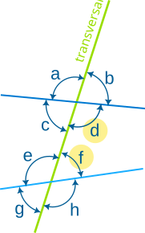

FrJAKsuH2iE
Consecutive Interior Angles
When two lines are crossed by another line (called the Transversal):

The pairs of angles on one side of the transversal but inside the two lines are called Consecutive Interior Angles.
In this example d and f are Consecutive Interior Angles
Also c and e are Consecutive Interior Angles
To help you remember: the angle pairs are consecutive (they follow each other), and they are on the interior of the two crossed lines.

Parallel Lines
When the two lines being crossed are Parallel Lines the Consecutive Interior Angles add up to 180°.
images/parallel-pair.js
(Click on "Consecutive Interior Angles" to have them highlighted for you.)
Language Note: Also called Co-Interior Angles in the UK and Australia
2115,2116